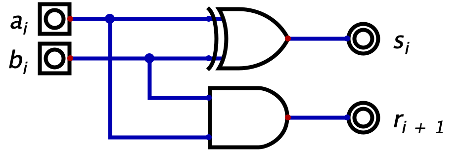
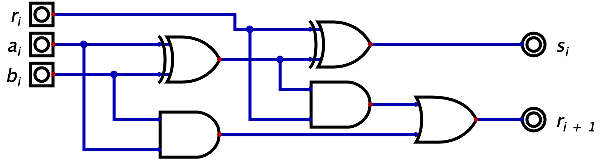
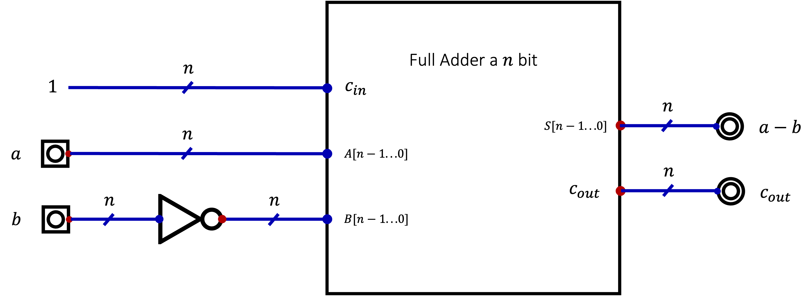
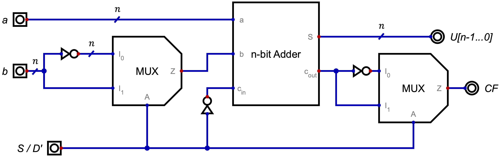

Definizione - Aritmetica binaria tra numeri unsigned (senza segno)
Il procedimento per effettuare operazioni di somma e differenza tra numeri binari non è differente dalle operazioni in colonna con i numeri decimali.
Si aggiunge tuttavia il concetto di overflow, dovuto al fatto che nei sistemi digitali si ha un numero fisso e finito di cifre disponibili (e quindi un numero massimo rappresentabile): ipotizzando infatti di dedicare \( 4\) bit per la rappresentazione di un numero, si ha che il massimo numero rappresentabile è \( 15\) (\( 2^{n} - 1\)). Sommando quindi (ad esempio) i numeri \( 11\) e \( 10\) (entrambi rappresentabili con \( 4\) bit), si otterrebbe il valore \( 21\) (che necessiterebbe di almeno \( 5\) bit).
Si aggiunge tuttavia il concetto di overflow, dovuto al fatto che nei sistemi digitali si ha un numero fisso e finito di cifre disponibili (e quindi un numero massimo rappresentabile): ipotizzando infatti di dedicare \( 4\) bit per la rappresentazione di un numero, si ha che il massimo numero rappresentabile è \( 15\) (\( 2^{n} - 1\)). Sommando quindi (ad esempio) i numeri \( 11\) e \( 10\) (entrambi rappresentabili con \( 4\) bit), si otterrebbe il valore \( 21\) (che necessiterebbe di almeno \( 5\) bit).
Tale concetto è facilmente osservabile dalla presenza dell'ultimo bit di riporto (detto "carry out") a \( 1\).
Definizione - Adder
Un Adder è una rete combinatoria che realizza la somma.
Invece di progettare una rete con \( 2 \cdot n\) ingressi (\( n\) per ogni numero), si può notare la possibilità di adottare un approccio modulare: ciò che è vero per due numeri fatti di un singolo bit, può essere ripetuto per \( n\) volte (aggiungendo il riporto). È quindi sufficiente creare una rete che somma tre bit (i due bit in ingresso \( a_{i}\) e \( b_{i}\) aggiunti del bit di riporto precedente \( r_{i}\)) e che restituisce il bit somma \( s_{i}\) e il bit di riporto successivo \( r_{i + 1}\).
Invece di progettare una rete con \( 2 \cdot n\) ingressi (\( n\) per ogni numero), si può notare la possibilità di adottare un approccio modulare: ciò che è vero per due numeri fatti di un singolo bit, può essere ripetuto per \( n\) volte (aggiungendo il riporto). È quindi sufficiente creare una rete che somma tre bit (i due bit in ingresso \( a_{i}\) e \( b_{i}\) aggiunti del bit di riporto precedente \( r_{i}\)) e che restituisce il bit somma \( s_{i}\) e il bit di riporto successivo \( r_{i + 1}\).
Definizione - Half Adder
L'Half Adder prevede la presenza di due soli bit di ingresso (\( a_{i}\) e \( b_{i}\)) e può essere realizzato semplicemente nel seguente modo: Per quanto riguarda il bit somma \( s_{i}\), può essere ottenuto utilizzando un gate EXOR (che realizza proprio la somma logica), mentre per il riporto si utilizza un gate AND (che verifica la presenza di due bit a \( 1\)).

Definizione - Full Adder
Il Full Adder permette di sommare i due bit di ingresso \( a_{i}\) e \( b_{i}\) ed un terzo bit di riporto \( r_{i}\). Esso può quindi essere così realizzato: Esso è realizzato ponendo due Half Adder in serie: il bit somma \( s_{i}\) è realizzato grazie agli EXOR, mentre il bit di riporto \( r_{i + 1}\) si ottiene valutando la presenza di almeno un riporto dei due Half Adder (con un gate OR).

Definizione - Adder a \( n\) bit
In base alle necessità, è possibile realizzare un Adder a \( n\) bit in due diversi modi.
Nel caso lo si realizzi ponendo in serie un Half Adder e \( n - 1\) Full Adder si ottiene una rete a due ingressi (ognuno dei quali è un bus di \( n\) bit) e in uscita ha un bus di \( n\) bit che rappresenta la somma e un segnale ad un bit detto \( c_{out}\) ("carry out", ovvero il riporto).
Nel caso invece lo si realizzi ponendo in serie \( n\) Full Adder, si ottiene una rete analoga alla precedente ma che prevede un bit in ingresso detto \( c_{in}\) ("carry in" ovvero il riporto in ingresso). In questo modo è possibile disporre in serie \( m\) Full Adder per ottenere un Full Adder \( m \cdot n\) bit.
Nel caso lo si realizzi ponendo in serie un Half Adder e \( n - 1\) Full Adder si ottiene una rete a due ingressi (ognuno dei quali è un bus di \( n\) bit) e in uscita ha un bus di \( n\) bit che rappresenta la somma e un segnale ad un bit detto \( c_{out}\) ("carry out", ovvero il riporto).
Nel caso invece lo si realizzi ponendo in serie \( n\) Full Adder, si ottiene una rete analoga alla precedente ma che prevede un bit in ingresso detto \( c_{in}\) ("carry in" ovvero il riporto in ingresso). In questo modo è possibile disporre in serie \( m\) Full Adder per ottenere un Full Adder \( m \cdot n\) bit.
Definizione - Complemento a \( \beta - 1\)
Considerando un numero \( a\) di \( n\) cifre in base \( \beta\), si dice che il complemento a \( \beta - 1\) di tale numero è dato da \[ (\beta^{n} - 1) - a \] Da come si può dedurre da tale formula, il complemento a \( \beta - 1\) di un numero indica la differenza tra il massimo numero rappresentabile con \( n\) bit ed il numero stesso.
Nell'aritmentica binaria, il complemento a \( \beta - 1\) (detto anche "complemento a \( 1\)") di un numero è ottenibile effettuando il not "bit a bit".
Nell'aritmentica binaria, il complemento a \( \beta - 1\) (detto anche "complemento a \( 1\)") di un numero è ottenibile effettuando il not "bit a bit".
Esempio - Complemento a \( 9\) (\( \beta - 1\))
Considerando il numero \( 001234)_{10}\), si ha che il suo complemento a \( 9\) (considerando che è di \( 6\) cifre e che è in base \( 10\)) è dato da \[ (10^{6} - 1) - 1\,234 = 999\,999 - 1\,234 = 998\,765 \]
Esempio - Complemento a \( 1\) (\( \beta - 1\))
Considerando il numero \( 1010001)_{2}\), si ha che il suo complemento a \( 1\) (considerando che ha \( 7\) cifre e che è in base \( 2\)) è dato da \[ (2^{6} - 1) - 1010001 = 111111 - 1010001 = 0101110 \] che è anche calcolabile effettuando il not "bit a bit".
Definizione - Complemento a \( \beta\)
Considerando un numero \( a\) di \( n\) cifre in base \( \beta\), si dice che il complemento a \( \beta\) di tale numero è dato da \[ \beta^{n} - a \] Da come è possibile dedurre dalla formula, esso è anche calcolabile aggiungendo \( 1\) al complemento \( \beta - 1\).
Nell'aritmentica binaria, il complemento a \( \beta\) (detto anche "complemento a \( 2\)") di un numero è ottenibile sia effettuando il not "bit a bit" del numero e poi sommandogli \( 1\) (ovvero sommando \( 1\) al complemento a \( 1\)), sia lasciando invariato il numero fino al primo \( 1\) partendo da destra (esso incluso) e complementando i rimanenti.
Nell'aritmentica binaria, il complemento a \( \beta\) (detto anche "complemento a \( 2\)") di un numero è ottenibile sia effettuando il not "bit a bit" del numero e poi sommandogli \( 1\) (ovvero sommando \( 1\) al complemento a \( 1\)), sia lasciando invariato il numero fino al primo \( 1\) partendo da destra (esso incluso) e complementando i rimanenti.
Esempio - Complemento a \( 2\) (\( \beta\))
Considerando il numero \( 1010001)_{2}\), si ha che il suo complemento a \( 2\) è dato da \[ NOT(1010001) + 1 = 0101110 + 1 = 0101111 \]
Definizione - Sottrazione tra numeri unsigned (senza segno) utilizzando un Full Adder
Considerando due numeri binari unsigned \( a\) e \( b\) con \( a \geq b\), è possibile calcolare la differenza \( (a - b)\) utilizzando la rappresentazione in complemento a \( 2\) per \( b\) (in quanto, sostituendo \( b\) con l'equivalente \( (2^{n} - b)\) si ottiene il valore \( (a - b + 2^{n})\)).
Per implementare la sottrazione utilizzando un Full Adder a \( n\) bit è sufficiente complementare \( b\), impostare il bit \( c_{in} = 1\) e considerare il \( c_{out}\) come un flag di validità: nel caso sia \( 0\) il risultato non è valido. Di seguito lo schema logico per un generico adder/subtracter: L'ingresso S / D' dovrà avere valore 1 nel caso si voglia che il circuito esegua un'addizione, 0 nel caso si voglia calcolare una sottrazione. L'uscita CF indica la validità dell'operazione (1 se è valida, 0 se non lo è).
Per implementare la sottrazione utilizzando un Full Adder a \( n\) bit è sufficiente complementare \( b\), impostare il bit \( c_{in} = 1\) e considerare il \( c_{out}\) come un flag di validità: nel caso sia \( 0\) il risultato non è valido.


Definizione - Rappresentazione in base \( 2\) di numeri signed (con segno)
È possibile rappresentare i numeri signed in diversi modi:
- rappresentazione modulo e segno, ovvero si dedica un bit (il più significativo) al segno e i restanti al valore assoluto. Con \( n\) bit si rappresenta quindi l'intervallo \[ [ -(2^{n - 1} - 1), 2^{n - 1} - 1 ] \] Si rappresenta quindi un intervallo simmetrico con due rappresentazioni per lo \( 0\) (\( -0\) e \( +0\)).
- rappresentazione in complemento a \( 2\), ovvero si rappresentano i numeri negativi in complemento a \( 2\) (dedicando implicitamente un bit al segno, ovvero il bit più significativo ha valore \( -2^{n}\)). Si ha quindi che con \( n\) bit si può rappresentare il seguente intervallo: \[ [ -2^{n - 1}, 2^{n - 1} - 1] \]
Nota bene - Why "Complemento a \( 2\)"?
Le motivazioni per cui si è scelta la rappresentazione in complemento a \( 2\) si deve all'efficienza dei calcoli (che risulta essere molto più complesso nella rappresentazione modulo e segno).
Definizione - Operazioni tra numeri signed (con segno) utilizzando un Full Adder
Per gestire le operazioni con i numeri con segno, è necessario gestire l'overflow: si ha infatti che nella rappresentazione in complemento a \( 2\) esso non dipende dal solo bit di "carry out", bensì dipende dal fatto di sommare due numeri dello stesso segno e ottenerne uno con segno diverso. Verificare ciò equivale a verificare che: \[ overflow \ = \ (a_{n - 1} == b_{n - 1}) \quad and \quad (a_{n - 1} \neq s_{n - 1} ) \] Questo è però equivalente a verificare che i gli ultimi due bit di riporto siano diversi \[ overflow \ = \ (c_{out} \neq r_{n - 1}) \] dove \( r_{n - 1}\) è il penultimo riporto.
Si ha infatti che se i due numeri hanno lo stesso segno, ovvero \[ a_{n - 1} == b_{n - 1} \] ciò implicherebbe che \[ s_{n - 1} = r_{n - 1} \] (in quanto se si sommano due bit uguali (ovvero \( a_{n -1}\) e \( b_{n -1}\)) ad un terzo bit (ovvero \( r_{n - 1}\)), il risultato sarà il valore di tale bit).
Si ha inoltre che il \( c_{out}\) è sempre uguale a \( a_{n - 1}\) (in quanto se i due bit di segno sono \( 0\) non si potrà mai avere il riporto, altrimenti lo si ha obbligatoriamente). Quindi il flag di overflow è dato dall'EXOR del carry out della rete (\( c_{out}\), ovvero \( r_{n}\)) con quello del penultimo (\( r_{n - 1}\)).
Si ha infatti che se i due numeri hanno lo stesso segno, ovvero \[ a_{n - 1} == b_{n - 1} \] ciò implicherebbe che \[ s_{n - 1} = r_{n - 1} \] (in quanto se si sommano due bit uguali (ovvero \( a_{n -1}\) e \( b_{n -1}\)) ad un terzo bit (ovvero \( r_{n - 1}\)), il risultato sarà il valore di tale bit).
Si ha inoltre che il \( c_{out}\) è sempre uguale a \( a_{n - 1}\) (in quanto se i due bit di segno sono \( 0\) non si potrà mai avere il riporto, altrimenti lo si ha obbligatoriamente). Quindi il flag di overflow è dato dall'EXOR del carry out della rete (\( c_{out}\), ovvero \( r_{n}\)) con quello del penultimo (\( r_{n - 1}\)).
Definizione - Limiti del \( n\)-bit Adder (ripple-carry Adder)
Tale realizzazione dell'\( n\)-bit Adder (detta anche "ripple-carry Adder") è molto lenta: ciò è dovuto al fatto che la disposizione in serie degli adder rende necessario che ognuno debba "aspettare" che il precedente abbia terminato in quanto deve conoscere il \( c_{out}\) del precedente.
Ipotizzando quindi che ogni Adder impieghi \( 2 \tau_{p}\) per calcolare il riporto, si ha che per il calcolo della somma tra numeri di \( 64\) bit si avrà un ritardo (ovvero un risultato aggiornato) di \( 128 \tau_{p}\).
Ipotizzando quindi che ogni Adder impieghi \( 2 \tau_{p}\) per calcolare il riporto, si ha che per il calcolo della somma tra numeri di \( 64\) bit si avrà un ritardo (ovvero un risultato aggiornato) di \( 128 \tau_{p}\).
Definizione - Carry lookahead Adder
Con la miniaturizzazione dei componenti, è stato possibile realizzare un altro Adder composto da più gate ma che non pone in cascata diverse reti.
Tale realizzazione si basa sul principio che è possibile esprimere ogni bit risultato in funzione dei bit di ingresso. Si ha infatti che:
Tale realizzazione si basa sul principio che è possibile esprimere ogni bit risultato in funzione dei bit di ingresso. Si ha infatti che:
- l'\( i\)-esimo bit di somma \( s_{i}\) è calcolato come \[ s_{i} = a_{i} \oplus b_{i} \oplus r_{i} \] ovvero la somma logica dei segnali e dell'\( i\)-esimo riporto;
- l'\( (i + 1)\)-esimo bit di riporto \( r_{i + 1}\) può essere calcolato come \[ r_{i + 1} = (r_{i} \cdot (a_{i} \oplus b_{i})) + (a_{i} \cdot b_{i}) \] (ovvero si ha riporto sia se i due bit da sommare sono entrambi a \( 1\), sia se la somma dei due e il \( c_in\) in ingresso sono a \( 1\)).
Dato inoltre che \( r_{i}\) può essere espresso in funzione dei segnali al bit \( (i - 1)\), ovvero \[ r_{i} = (r_{i - 1} \cdot (a_{i - 1} \oplus b_{i - 1})) + (a_{i - 1} \cdot b_{i - 1}) \] fino a raggiungere la prima addizione in cui \( i = 0\) (e \( r_{0}\) è inizialmente fornito), si ha che l'\( (i + 1)\)-esimo riporto è dato da \[ r_{i + i} = \left( r_{0} \cdot \prod_{j = 0}^{i} \left( a_{j} \oplus b_{j} \right) \right) + \left( \sum_{j = 0}^{i} \left( \left( \ a_{j} \cdot b_{j} \right) \cdot \prod_{k = j + 1}^{i} \left( a_{k} \cdot b_{k} \right) \right) \right) \] Si ottiene in questo modo che ogni riporto è disponibile dopo \( 3 \tau_{p}\), indipendentemente dal numero di bit che si sommano.
Definizione - Arithmetic Logic Unit (ALU)
L'ALU ("Arithmetic Logic Unit") è una macchina combinatoria in grado di eseguire operazioni aritmetiche e logiche su due operandi. Uno specifico segnale in ingresso, detto op-code, indica quale di queste operazioni eseguire. Oltre al risultato dell'operazione, forniscono in uscita anche una serie di flag che indicano il verificarsi di specifiche condizioni.
Tale componente è fondamentalmente costruito sulla base di un Full Adder adeguatamente modificato per eseguire diverse operazioni aritmetiche e diverse operazioni logiche.
Tra i flag aggiunti si ricordano:
Tale componente è fondamentalmente costruito sulla base di un Full Adder adeguatamente modificato per eseguire diverse operazioni aritmetiche e diverse operazioni logiche.
Tra i flag aggiunti si ricordano:
- lo Zero Flag, che segnala se il risultato è \( 0\);
- il Sign Flag, che segnala se il risultato è negativo (considerando sempre la rappresentazione in complemento a \( 2\)).